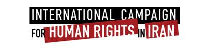

|
|
|
Browsing
Contact Us |
Campaigners |
Face to Face |
Tribune |
Interview |
News |
On the Web |
One Million |
Report
Farsi | Français | German | Italian | Spanish | العربية Also in this section
|
 End Persecution of Nobel LaureateTuesday 30 December 2008 Documents Unlawfully Seized at Rights Activist Shirin Ebadi’s Office International Campaign for Human Rights in Iran: The Iranian government should end immediately its escalating persecution of Dr. Shirin Ebadi, the 2003 Nobel peace laureate and a leading human rights defender, Human Rights Watch and the International Campaign for Human Rights in Iran said today. “We are extremely worried for Shirin Ebadi’s safety and her ability to continue her important human rights work,” said Kenneth Roth, executive director of Human Rights Watch. Ebadi reported that officials identifying themselves as tax inspectors arrived at her private law office in Tehran at approximately 5:30 p.m. on 29 December 2008, and removed documents and computers, despite her protests that the materials contained protected lawyer-client information. The raid was the second in ten days targeting Ebadi and her colleagues. Human Rights Watch and the International Campaign for Human Rights in Iran expressed serious concern that the continuing attacks against Ebadi not only endanger her, but puts all Iranian civil society activists in peril. “If Ebadi is not safe from official harassment, no Iranian activist can feel safe from persecution and dubious prosecution resulting from the government’s distaste for peaceful activism,” said Hadi Ghaemi, coordinator of the International Campaign for Human Rights in Iran. On 21 Decembe, officials prevented a planned celebration of the 60th anniversary of the Universal Declaration of Human Rights and forced the closure of the Defenders of Human Rights Center (DHRC), which Ebadi helped found. The Center provides legal defense for victims of human rights abuses in Iran. Narges Mohammadi, the spokeswoman for the Human Rights Center, said that after the attack on its office on December 21, government agents also went to Ebadi’s private office and tried to remove documents under the guise of tax inspection. After Ebadi explained that she provides legal defense work pro-bono and that she earns no income from it, the agents accepted her explanation and left. The confiscation of materials from Ebadi’s private legal practice is the latest in a series of attacks against her, presumably in response to her human rights activism. In August, the official IRNA news agency alleged that her daughter had converted to the Baha’i faith, a serious accusation in a country where apostasy may be punished with death. Since winning the Nobel Peace Prize, Ebadi has been the target of many death threats from little-known groups accusing her of supporting Baha’ism. The International Campaign for Human Rights in Iran and Human Rights Watch called upon the Iranian authorities to restore intact the confiscated documents and computers and to cease any further harassment of Ebadi and other human rights defenders. The groups urged concerned governments and inter-governmental bodies, as well the UN human rights mechanisms, to register strong protests publicly as well as privately with the Iranian government over its persecution of Ebadi and other human rights defenders. |